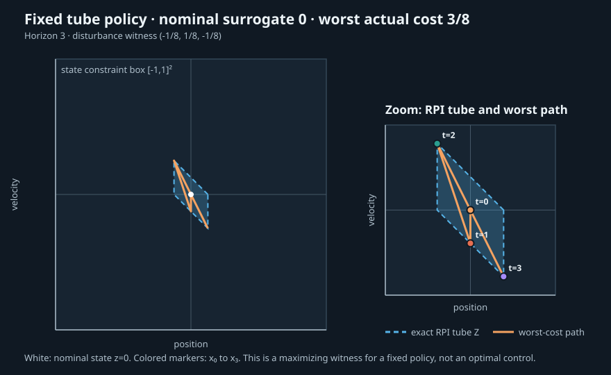

New comparison · exact rational functional evidence · no timing experiment
Tube feedback changes cost beyond the nominal surrogate
For one fixed zero nominal plan and exact full-state gain K=[-1,-2], exact enumeration gives nominal surrogate cost 0 and continuous-box worst-case actual cost 3/8.

Model and policy
x[t+1]=A x[t]+B u[t]+E w[t], u[t]=v[t]+K(x[t]-z[t]), with v[t]=0, x[0]=z[0]=0, horizon 3, and stagewise independent w[t]∈[-1/8,1/8]. Full state is observed before each input; disturbance enters after the input.
Cost: sum(t=0..2, ||x[t]||² + u[t]²) + ||x[3]||². The nominal surrogate evaluates the same expression on z[t],v[t].
Exact result
| Nominal surrogate | 0 |
|---|---|
| Worst-case actual cost | 3/8 |
| Maximizing disturbance | -1/8, 1/8, -1/8 and its sign reversal |
| Safety checks | 8 of 8 disturbance vertices; all satisfy state and input bounds |
The cost is a convex quadratic in the stacked disturbance vector. A convex function on a compact box reaches its maximum at a vertex, so this exact rational enumeration establishes the maximum over the continuous disturbance box for this fixed policy.
Evidence boundary
This evaluates one fixed plan and one fixed gain. It does not optimize either, and is not a minimax optimum or globally optimal causal value. No terminal invariance, asymptotic-stability, approximation-family comparison, or performance claim is made. The exact RPI tube is inherited from the separately checked feasibility pilot; its source inputs and result are included as base scenario and base result.
Reproduce
python scripts/reports/mpc06/build_tube_objective.py
python scripts/reports/mpc06/check_tube_objective.py
No API, dependency, installation, or release changes. The cost evaluation uses Python standard-library rational arithmetic, not an external solver.